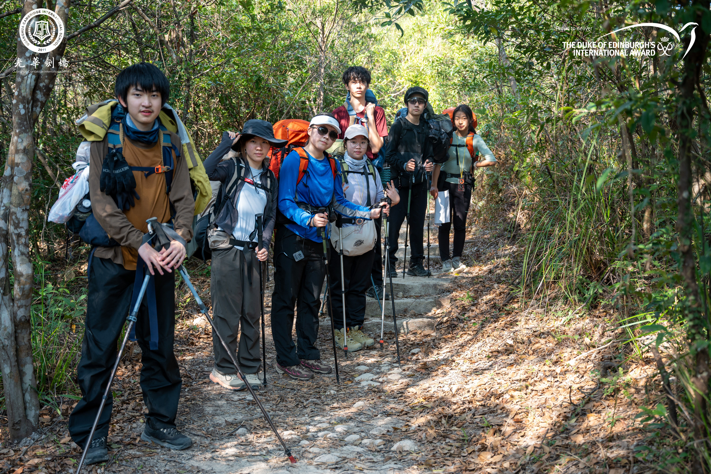
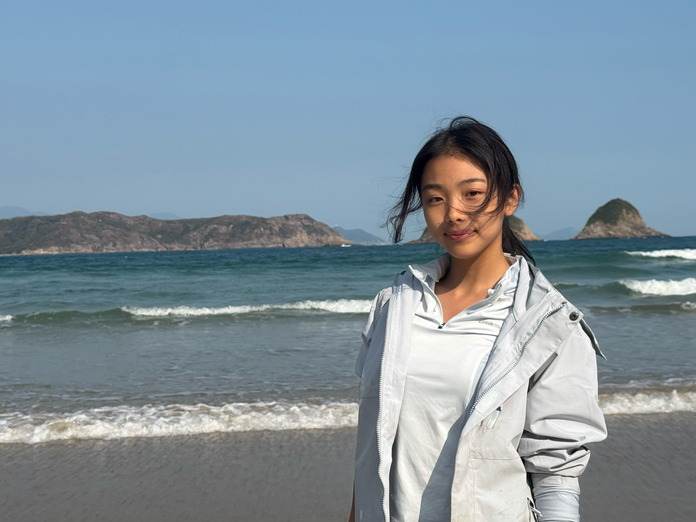

Duke of
Edinburgh's Award
A journey built around learning a new skill, staying active, exploring the outdoors, and becoming more independent.
Silver Award
The Duke of Edinburgh's Award challenged me to step outside the classroom and develop skills through long-term commitment. My journey combined French as a skill, badminton as physical recreation, and a multi-day expedition.
Learning French
Learning French became an exercise in consistency. Instead of expecting progress immediately, I built a habit of returning to the language repeatedly — learning vocabulary, practicing pronunciation, and tracking my progress over time.


Badminton
Badminton was part of my DofE physical recreation, but my connection with the sport extends beyond the award itself.


Six days on the trail
The expedition was one of the most memorable parts of my DofE experience. Over six days, I hiked from Huizhou toward Hong Kong, carrying my own equipment, working with teammates, and adapting to changing conditions along the trail.
Huizhou → Hong Kong
Six days · Hiking · Teamwork · Navigation · Perseverance


